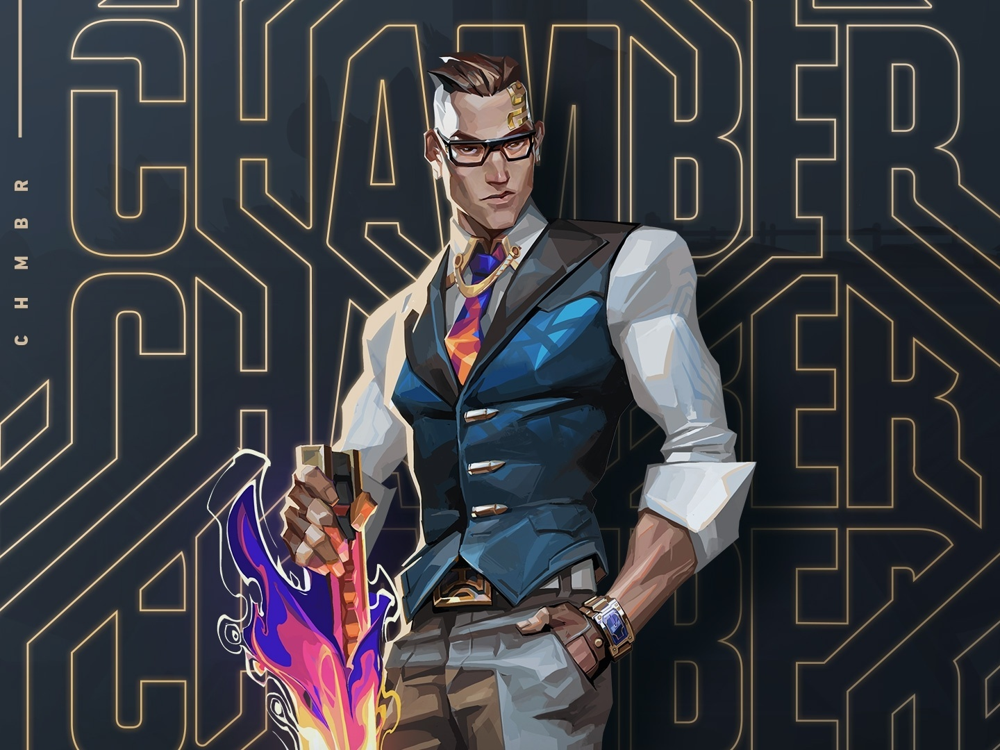

ATUALIZAÇÕES DOS PERSONAGENS

Nerf do Chamber
O patch 4.09 trouxe más notícias para os fãs de Chamber e, com os nerfs no sentinela, a comunidade se juntou para dar ideias para melhorar outro agente da função: Cypher. No Reddit, os entusiastas do VALORANT se juntaram para das diversas ideias de buffs e mudanças para Qualidade de Vida para o sentinela.